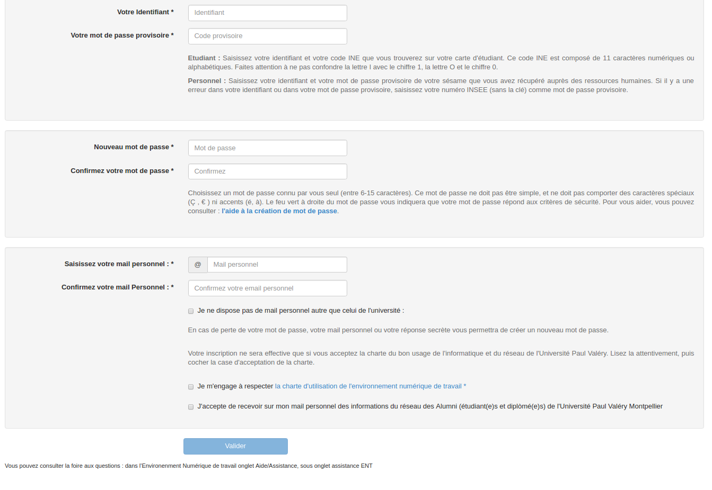
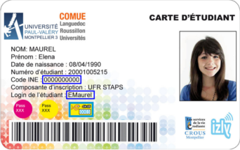
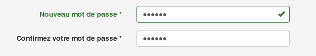
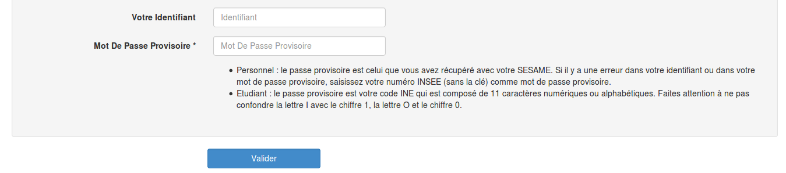
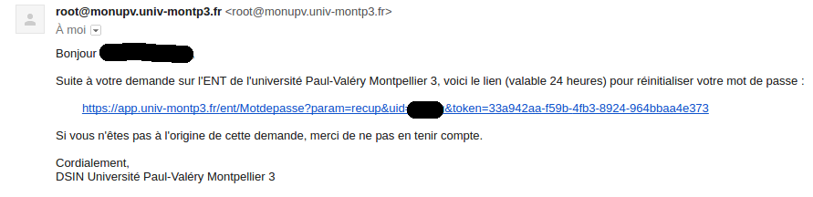
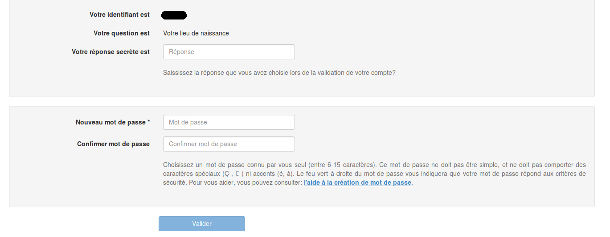
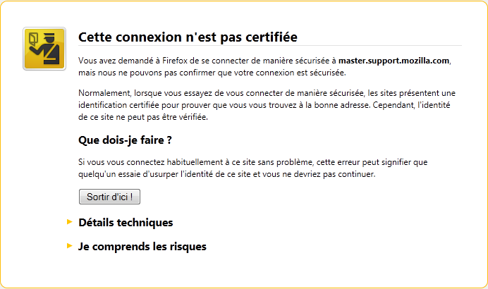

Assistance ENT
Afin de vous aider, une foire aux questions sur l'ENT de l'Université Paul Valéry Montpellier est à votre disposition, elle recense les questions les plus fréquemment posées ainsi que leurs réponses.
Tout d'abord munissez-vous de votre identifiant ainsi que de votre code INE. Ensuite rendez-vous sur l'ENT de l'Université (https://monupv.univ-montp3.fr), puis cliquez sur "Nouveau à l'université ? Validez votre compte" et remplissez le formulaire de validation avec les informations demandées (voir copie d'écran ci-dessous).
Votre identifiant et votre code ine se situent sur votre carte étudiant (voir copie d'écran ci-dessous) et/ou sur votre certificat de scolarité. L'identifiant est généralement composé de la première lettre de votre prénom ainsi que des 7 premières lettres de votre nom et éventuellement completé d'un chiffre. Le code INE est un code composé de 11 caractères (chiffre et lettre).
Pour accéder aux différents services informatiques et réseaux de l'Université, il vous faut un compte informatique protégé par un mot de passe. Ce mot de passe protège la confidentialité de vos informations, il est donc important que ce dernier soit le plus sûr possible.
Dans ce but, un contrôle automatique est effectué lors de la validation de votre compte afin de vérifier la complexité du mot de passe choisi. Ce mot de passe est ainsi rejeté s'il est trop simple à retrouver.
Une coche verte, après la première saisie du mot de passe indiquera que ce dernier est assez complexe.
 Un bon mot de passe doit être constitué d'au moins 6 caractères et n'être en aucun cas issu d'un dictionnaire
français ou étranger.
Vous pouvez utiliser les lettres de l'alphabet (minuscules et majuscules), les
chiffres ou les signes de ponctuation. A éviter : les mots de passe en rapport avec votre vie privée
(nom de famille, numéro de téléphone, date de naissance...) ou professionnelle (nom du diplôme préparé), ainsi que
toutes les suites logiques : azerty, qwerty, abcdefgh, 1234567
Quelques exemples :
- les premières lettres d'une phrase connue : « alCFmeaP » pour « à la claire fontaine m'en allant promener»
- un mot écrit phonétiquement : « c-durAfer » pour «C'est très dur à faire »
La validation de votre compte ne pourra se faire qu'au plus tôt le lendemain de votre inscription administrative.
- Dans un premier temps, vérifiez que vous ayez bien saisi le code INE, en particulier soyez attentif avec les lettres I , L et le chiffre 1 que l'on peut confondre.
- Dans un deuxième temps, vérifiez que vous ayez le bon identifiant.
- Le mot de passe doit être complexe et ne doit pas contenir un mot du dictionnaire (pour plus d'informations sur le choix d'un mot de passe, consultez la rubrique l'aide à la création de mot de passe.
Si la validation ne fonctionne toujours pas, rendez-vous au pavillon informatique entre 09h30 et 15h30 de septembre à octobre ou contactez-nous sur sos-ent@univ-montp3.fr en nous précisant votre identifiant, votre code INE ainsi que votre numéro d'étudiant, toute demande sans ces informations ne sera pas traitée.
La première chose à faire dans ce cas est de changer votre mot de passe (voir "J'ai oublié mon mot de passe").
Si l'authentification échoue de nouveau, rendez-vous au pavillon informatique entre 9h30 et 15h30 de septembre à octobre muni de votre carte étudiant ou contactez-nous à l'adresse suivante sos-ent@univ-montp3.fr en nous précisant votre identifiant, votre code INE ainsi que votre numéro d'étudiant, toute demande sans ces informations ne sera pas traitée.
Pour tout mot de passe oublié, veuillez vous rendre sur l'ENT de l'université (https://monupv.univ-montp3.fr), puis cliquez sur "mot de passe oublié".
Ensuite selon votre compte :
- Vous allez recevoir un mail sur votre boite personnelle, suivez le lien saisi dans le mail et réinitialisé votre mot de passe 
- Saisissez la réponse à votre question secrète et votre nouveau mot de passe 
Présentez-vous avec votre carte d'étudiant au point accueil ENT situé au Pavillon Informatique entre 09h30 et 15h30 de septembre à octobre. Durant les périodes de fermeture du point d'accueil ENT déplacez vous au bureau 117bis ou 117 du bâtiment administratif.
En tant qu'ancien(ne) étudiant(e), votre compte ENT reste actif jusqu'à 3 ans après votre dernière inscription universitaire à Paul Valéry. Vous pourrez ainsi récupérer certains documents en vous connectant à votre ENT. Pour les étudiants ayant dépassé les 3 ans ou pour ceux n'ayant jamais validé leur compte, vous pouvez récupérer vos attestions et relevés de notes auprès du service de la scolarité de l'Université: des_resultats@univ-montp3.fr
Si vous utilisez firefox comme navigateur et que vous obtenez une page de ce style en vous connectant à l'ENT.
Vous pouvez contourner l'exception en suivant la documentation fournie par ce lien
- Rajouter un service dans votre page d'accueil. Pour cela, cliquez sur Options => Ajouter à mon accueil.
 Attention, le service va se rajouter en bas de la première colonne votre accueil.
Attention, le service va se rajouter en bas de la première colonne votre accueil.
- Déplacer un service sur votre accueil. Pour cela, cliquez sur Options => Déplacer cette portlet. Ensuite, cliquez sur la croix et faire un glisser déplacer.


Afin de connaître les fonctionnalités et la procédure d'accès liées à la messagerie, connectez-vous au Catalogue des Services
La rédirection de mail est actuellement indisponible
Attention au classement des mails, ils sont parfois classés par ordre chronologique, donc les derniers mails arrivés sont à la fin.
Si vous ne recevez toujours pas vos mails, contactez-nous. ( Merci de nous indiquer votre identifiant, votre code INE ainsi que votre numéro d'étudiant, toute demande sans ces informations ne sera pas traitée )
Pour toutes questions liées à votre inscription administrative : des_ia@univ-montp3.fr
Pour toutes questions liées à vos attestations de résultats : des_resultats@univ-montp3.fr
Pour accéder aux cours en ligne, connectez vous à l'ENT cliquez sur 'Cours en ligne' dans l'onglet "Outils Pédagogiques'.
Si vous rencontrez un problème, contactez sos-moodle@univ-montp3.fr
Consultez la fiche 'Accès à mes cours en ligne - MOODLE' du Catalogue des Services
Pour toutes questions liées à votre inscription administrative : des_ia@univ-montp3.fr
Pour toutes questions liées à la prise de rendez-vous: des_rdv@univ-montp3.fr
Pour accéder aux groupes de langue, connectez vous à l'ENT, dans l'onglet "Inscriptions" cliquez sur "Choix d'un groupe". Si vous n'arrivez pas à vous inscrire, contactez votre secrétariat pédagogique.
Pour vous inscrire accédez à l'url suivante https://ufr5.www.univ-montp3.fr/.
Si vous rencontrez des difficultés, contactez : pole.technique.ufr5@univ-montp3.fr
Contactez le : miap.cours_informatique@univ-montp3.fr
Tout d'abord, vous devez contacter votre interlocuteur à la DHR pour obtenir votre sésame nécéssaire pour valider votre compte.
Ensuite rendez-vous sur l'ENT de l'Université (https://monupv.univ-montp3.fr), puis cliquez sur "Nouveau à l'université ? Validez votre compte" et remplissez le formulaire de validation avec les informations demandées (voir copie d'écran ci-dessous).
Pour accéder aux différents services informatiques et réseaux de l'Université, il vous faut un compte informatique protégé par un mot de passe. Ce mot de passe protège la confidentialité de vos informations, il est donc important que ce dernier soit le plus sûr possible.
Dans ce but, un contrôle automatique est effectué lors de la validation de votre compte afin de vérifier la complexité du mot de passe choisi. Ce mot de passe est ainsi rejeté s'il est trop simple à retrouver.
Une coche verte, après la première saisie du mot de passe indiquera que ce dernier est assez complexe.
Un bon mot de passe doit être constitué d'au moins 6 caractères et n'être en aucun cas issu d'un dictionnaire
français ou étranger.
Vous pouvez utiliser les lettres de l'alphabet (minuscules et majuscules), les
chiffres ou les signes de ponctuation. A éviter : les mots de passe en rapport avec votre vie privée
(nom de famille, numéro de téléphone, date de naissance...) ou professionnelle (nom du diplôme préparé), ainsi que
toutes les suites logiques : azerty, qwerty, abcdefgh, 1234567
Quelques exemples :
- les premières lettres d'une phrase connue : « alCFmeaP » pour « à la claire fontaine m'en allant promener»
- un mot écrit phonétiquement : « c-durAfer » pour «C'est très dur à faire »
- Vérifiez que vous avez bien saisi votre mot de passe provisoire. Essayez sinon de saisir votre numéro de sécurité sociale comme mot de passe provisoire.
- Vérifiez que vous avez le bon identifiant
- Le mot de passe doit être complexe et ne doit pas contenir un mot du dictionnaire (pour plus d'informations sur le choix d'un mot de passe, consultez la rubrique l'aide à la création de mot de passe.
Si la validation ne fonctionne toujours pas, contactez-nous sur sos-ent@univ-montp3.fr en nous précisant votre identifiant.
La première chose à faire dans ce cas est de changer votre mot de passe (voir "J'ai oublié mon mot de passe"). Si l'authentification échoue encore, contactez-nous à l'adresse suivante sos-ent@univ-montp3.fr en nous précisant votre identifiant.
Pour tout mot de passe oublié, veuillez vous rendre sur l'ENT de l'université (https://monupv.univ-montp3.fr), puis cliquez sur "mot de passe oublié".
Ensuite selon votre compte :
- Vous allez recevoir un mail sur votre boite personnelle, suivez le lien saisi dans le mail et réinitialisé votre mot de passe
- Saisissez la réponse à votre question secrète et votre nouveau mot de passe
Si vous utilisez firefox comme navigateur et que vous obtenez une page de ce style en vous connectant à l'ENT
Vous pouvez contourner l'exception en suivant la documentation fournie par ce lien
- Rajouter un service dans votre page d'accueil. Pour cela, cliquez sur Options => Ajouter à mon accueil.
Attention, le service va se rajouter en bas de la première colonne votre accueil.
- Déplacer un service sur votre accueil. Pour cela, cliquez sur Options => Déplacer cette portlet. Ensuite, cliquez sur la croix et faire un glisser déplacer.
Tout d'abord connectez-vous à l'ENT. Puis dans l'onglet "Outils collaboratifs" cliquez sur "Messagerie".